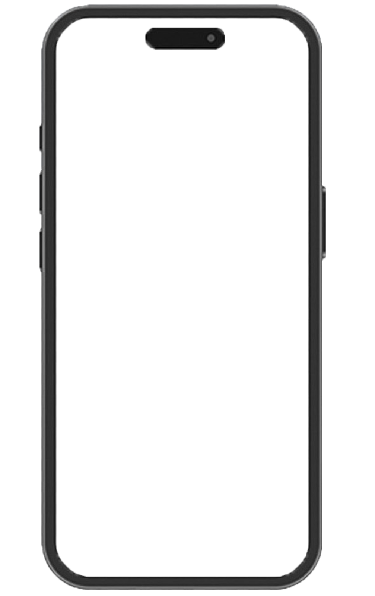

作品を チェック
- 概要
-
文字数が多くなりがちなBtoBのLPを作成し、「情報の整理」の練習を行いました。アイコンや図解を使って、いかに「読ませずに理解させるか」を意識しています。
色味やフォント、アイコンや画僧に注意して、システムとしての「信頼」「安心」を表現してみて見ました。
要件定義書／詳細設計書を見る - 目的／意図
-
「資料請求」および「１４日間無料デモ」の申し込み獲得。
という程で来た制作依頼を想定してLP作成の練習 - ターゲット
-
３０代〜５０代の中小製造業の経営者・工場責任者。
アナログな管理（Excelや手書き）による発注ミス、在庫過多、欠品、棚卸しの負担。
- 使用ツール
- Ps Figma
- 制作期間
-
- 素材作成
- ２時間程度
- ＬＰデザイン作成
- ２日
- デザインの意思入れ
-
- 全体構成
-
全体的にシンプルな構成にしています。
FVから始まり、FAQで締める流れは詳細設計書にも記載されているのでそれ通りに作成しました。
ただ３つの特徴〜３step解決策の順番を入れ替えています。
詳細設計書は”小⇨大”になっており最後まで進まないとメリットが見えない構成になっていたので順番を変えています。
- カラー／配色
-
”信頼”、”安心”のブルーをメインカラーとして、テーマをホワイトにしてスッキリした印象とBtoBサービス的に効果的な配色を意識しました。
アクセントカラーにはイエローやレッドを配置。CTAにはど定番のオレンジを使用しています。
背景や一部パーツにグラデーションを使い、”IT感”や”AIシステム感”をアピールしています。 - フォント
-
Noto Sans JPをメインで使用しています。
親しみを感じやすく読みやすいフォントであることやNotoのビジョンでもある
「デジタルによる希少言語の保存に貢献する」という大きな”使命”と”誠実さ”は、数多ある企業へシステムで貢献するためのソフトである今回のサービスともリンクしていると考え選択しました。 - 詳細ルック
-
閲覧のしやすさ、クライアントが求めるサービスへの印象の植え付け、直感的に伝わるデザインを意識して作成しました。
メリットセクションの各種アイコンはシンプルかつわかりやすくをコンセプトに一目で効果がわかるようにデザインしました。
FAQセクションのアイコンも同様にシンプルかつカジュアルすぎないようにデザイン。
読み進めていく際にスクロールする流れを誘導できるように、セクションが変わるたびに背景に▼の図形を配置し
自然とスクロールしてもらえるようにデザインしています。
FVやクロージングは詳細設計書通りにクライアントの要望をそのまま反映。
